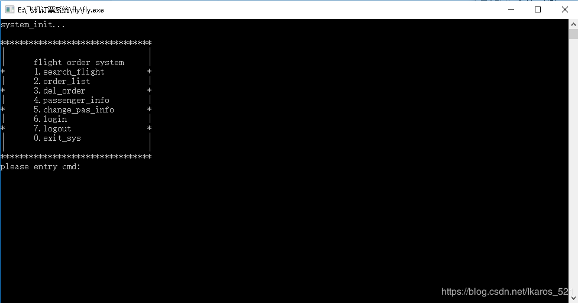

原文出处:本文由博客园博主Love丶伊卡洛斯提供。
原文连接:https://www.cnblogs.com/ikaros-521/p/11180065.html
原文连接:https://www.cnblogs.com/ikaros-521/p/11180065.html
开发环境：CodeBlocks
开发语言：C
实现功能：登录，订票，退票
数据存储：文本读写
涉及文件：

相关文件下载：
相关图片（仅供参考）：程序是没有涉及旅行社的
ER图：

数据库：

类图：

用例图：

订票顺序图：

订票状态图：


登录活动图：

以上图片仅供参考，请自行斟酌
程序主界面：

源码如下：
1 #include <stdio.h>
2 #include <stdlib.h>
3 #include <string.h>
4 #include <stdbool.h>
5 //#include "getch.h"
6 #include <conio.h>
7 #define MAX_Flight 50
8 #define MAX_Passenger 20
9 #define MAX_Order 50
10
11 typedef struct Flight
12 {
13 char fid[20]; //航班号
14 char fname[20]; //航班名称
15 char start[10]; //起点
16 char end[10]; //终点
17 int fnum; //票数
18 }Flight;
19
20 typedef struct Passenger
21 {
22 char pid[20]; //身份证
23 char pname[10]; //姓名
24 char password[20]; //密码
25 char tell[20]; //电话
26 }Passenger;
27
28 typedef struct Order
29 {
30 char pid[20]; //身份证
31 char fid[20]; //航班号
32 int num; //票数
33 }Order;
34
35 Flight *FLI;
36 Passenger *PAS;
37 Order *ORD;
38
39 char start[10]; //起点
40 char end[10]; //终点
41 char search_fid[50][20]; //符合条件的航班号
42 int search_fnum[50]; //符合条件的航班票数
43 int online = 0; //是否登录的变量
44 char online_pid[20]; //在线用户的身份证
45 int search_num = 0; //符合条件的航班数
46
47 void init_sys(void); // 系统初始化
48 void show_flight(void); // 显示航班表
49 void start_sys(void); // 系统开始运行
50 void exit_sys(void); // 退出系统
51 void menu(void); // 生成主菜单
52 void login(void); // 登录
53 void logout(void); //用户登出
54 void passenger_info(void); //查询旅客信息
55 bool change_pas_info(void); //修改旅客信息
56 void search_start(void); // 生成查询页面
57 bool search(void); // 查询航班
58 void order_list(void); // 生成订单表
59 void del_order(void); // 退票
60 void clear_stdin(void); // 清除输入缓冲区
61 char* get_str(char* str,size_t len); // 获取字符串
62 char get_cmd(char start,char end); // 获取cmd命令
63
64 int main()
65 {
66 init_sys();
67 start_sys();
68 exit_sys();
69 return 0;
70 }
71
72 // 系统初始化
73 void init_sys(void)
74 {
75 // 申请堆内存、加载数据
76 FLI = calloc(MAX_Flight,sizeof(Flight));
77 PAS = calloc(MAX_Passenger,sizeof(Passenger));
78 ORD = calloc(MAX_Order,sizeof(Order));
79 printf("system_init...\n");
80
81 FILE* ofrp = fopen("order.txt","r");
82 int i=0;
83 for(i=0; i<MAX_Order; i++) //读取文本中的数据到内存
84 { int num = 0;
85 num = fscanf(ofrp,"%s %s %d\n",ORD[i].pid,ORD[i].fid,&ORD[i].num);
86 }
87
88 FILE* ffrp = fopen("flight.txt","r");
89 for(i=0; i<MAX_Flight; i++)
90 {
91 int num = 0;
92 num = fscanf(ffrp,"%s %s %s %s %d\n",FLI[i].fid,FLI[i].fname,FLI[i].start,FLI[i].end,&FLI[i].fnum);
93 }
94
95 FILE* pfrp = fopen("passenger.txt","r");
96 for(i=0; i<MAX_Passenger; i++)
97 {
98 int num = 0;
99 num = fscanf(pfrp,"%s %s %s %s\n",PAS[i].pid,PAS[i].pname,PAS[i].password,PAS[i].tell);
100 }
101 }
102
103 // 显示航班表
104 void show_flight(void)
105 {
106 int i = 0;
107 for(i=0; i<MAX_Flight; i++)
108 {
109 if(strlen(FLI[i].fid) != 0)
110 {
111 printf("id:%s name:%s start:%s end:%s fnum:%d\n",FLI[i].fid,FLI[i].fname,FLI[i].start,FLI[i].end,FLI[i].fnum);
112 }
113 }
114 }
115
116 // 系统开始运行
117 void start_sys(void)
118 {
119 // 进入系统的业务流程控制
120 //printf("系统开始运行...\n");
121 //show_flight();
122 while(true)
123 {
124 menu();
125 switch(get_cmd('0','7'))
126 {
127 case '1': search_start(); break;
128 case '2': order_list(); break;
129 case '3': del_order(); break;
130 case '4': passenger_info(); break;
131 case '5': change_pas_info(); break;
132 case '6': login(); break;
133 case '7': logout(); break;
134 case '0': return;
135 }
136 }
137 }
138
139 // 系统结束
140 void exit_sys(void)
141 {
142 printf("data insert...\n");
143 FILE* ofwp = fopen("order.txt","w");
144 printf("ready insert order.txt\n");
145 int i= 0;
146 for(i=0; i<MAX_Order; i++) //数据存储回本地
147 {
148 int num = 0;
149 if(strlen(ORD[i].pid) != 0)
150 {
151 num = fprintf(ofwp,"%s %s %d\n",ORD[i].pid,ORD[i].fid,ORD[i].num);
152 //printf("insert order.txt success\n");
153 }
154 }
155
156 FILE* ffwp = fopen("flight.txt","w");
157 printf("insert flight.txt\n");
158 for(i=0; i<MAX_Flight; i++)
159 {
160 int num = 0;
161 if(strlen(FLI[i].fid) != 0)
162 {
163 num = fprintf(ffwp,"%s %s %s %s %d\n",FLI[i].fid,FLI[i].fname,FLI[i].start,FLI[i].end,FLI[i].fnum);
164 //printf("insert flight.txt success\n");
165 }
166 }
167
168 FILE* pfwp = fopen("passenger.txt","w");
169 printf("insert passenger.txt\n");
170 for(i=0; i<MAX_Passenger; i++)
171 {
172 int num = 0;
173 if(strlen(PAS[i].pid) != 0)
174 {
175 num = fprintf(pfwp,"%s %s %s %s\n",PAS[i].pid,PAS[i].pname,PAS[i].password,PAS[i].tell);
176 //printf("insert passenger.txt success\n");
177 }
178 }
179 // 释放内存、保存数据
180 free(FLI);
181 free(PAS);
182 free(ORD);
183 printf("exit...\n");
184 }
185
186 // 生成主菜单
187 void menu(void)
188 {
189 printf("\n");
190 printf("********************************\n");
191 printf("| |\n");
192 printf("| flight order system |\n");
193 printf("* 1.search_flight *\n"); //查询航班
194 printf("| 2.order_list |\n"); //查询订票信息
195 printf("* 3.del_order *\n"); //退订
196 printf("| 4.passenger_info |\n"); //查询旅客信息
197 printf("* 5.change_pas_info *\n"); //修改旅客信息
198 printf("| 6.login |\n"); //用户登录
199 printf("* 7.logout *\n"); //用户登出
200 printf("| 0.exit_sys |\n"); //退出系统
201 printf("| |\n");
202 printf("********************************\n");
203 //printf("\n");
204 }
205
206 // 登录
207 void login(void)
208 {
209 if(online == 0) //如果没有登录
210 {
211 int i=0;
212 int time = 0;
213 while(time<3)
214 {
215 char entry_pid[20]; //临时变量身份证
216 char entry_pw[20]; //临时变量密码
217 printf("please login!\n");
218 printf("please entry pid:");
219 get_str(entry_pid,20);
220 printf("please entry password:");
221 get_str(entry_pw,20);
222 for(i=0; i<MAX_Passenger; i++)
223 {
224 if(strlen(entry_pid)==0 || strlen(entry_pw)==0)
225 {
226 printf("pid or password can't be empty\n");
227 time++;
228 break;
229 }
230 else if(strcmp(PAS[i].pid,entry_pid) == 0 && strcmp(PAS[i].password,entry_pw) == 0)
231 {
232 printf("login success!\n");
233 strcpy(online_pid,entry_pid);
234 online = 1;
235 return;
236 }
237 else if(i==MAX_Passenger-1)
238 {
239 printf("pid or password error\n");
240 time++;
241 }
242 }
243 }
244 online = -1;
245 printf("you have been locked,you can use this system now\n");
246 }
247 else if(online ==1)
248 {
249 printf("you have been login\n");
250 }
251 else
252 {
253 printf("you have been locked,you can use this system now\n");
254 }
255
256 }
257
258 // 用户登出
259 void logout(void)
260 {
261 if(online == 1) //如果已经登录
262 {
263 online = 0;
264 printf("logout success\n");
265 }
266 else if(online == -1)
267 {
268 printf("you have been locked,you can use this system now\n");
269 }
270 else
271 {
272 printf("you have not login\n");
273 }
274 }
275
276 // 查询旅客信息
277 void passenger_info(void)
278 {
279 if(online == 1) //如果已经登录
280 {
281 //printf("online_pid:");
282 //puts(online_pid);
283 int i = 0;
284 for(i=0; i<MAX_Passenger; i++)
285 {
286 if(strcmp(online_pid,PAS[i].pid)==0)
287 {
288 printf("pid:%s, pname:%s, password:%s, tell:%s\n",PAS[i].pid,PAS[i].pname,PAS[i].password,PAS[i].tell);
289 break;
290 }
291 }
292 }
293 else if(online == -1)
294 {
295 printf("you have been locked,you can use this system now\n");
296 }
297 else
298 {
299 printf("you have not login\n");
300 }
301 }
302
303 //修改旅客信息
304 bool change_pas_info(void)
305 {
306 if(online == 1) //如果已经登录
307 {
308 printf("your old info:\n");
309 int i = 0;
310 for(i=0; i<MAX_Passenger; i++)
311 {
312 if(strcmp(online_pid,ORD[i].pid)==0)
313 {
314 printf("pid:%s, pname:%s\npassword:%s, tell:%s\n",PAS[i].pid,PAS[i].pname,PAS[i].password,PAS[i].tell);
315 break;
316 }
317 }
318 char new_pid[20];
319 char new_pname[10];
320 char new_password[20];
321 char new_tell[20];
322 printf("please entry new pid:");
323 get_str(new_pid,20);
324 printf("please entry new pname:");
325 get_str(new_pname,10);
326 printf("please entry new password:");
327 get_str(new_password,20);
328 printf("please entry new tell:");
329 get_str(new_tell,20);
330 strcpy(PAS[i].pid,new_pid);
331 strcpy(PAS[i].pname,new_pname);
332 strcpy(PAS[i].password,new_password);
333 strcpy(PAS[i].tell,new_tell);
334 printf("change success\n");
335 }
336 else if(online == -1)
337 {
338 printf("you have been locked,you can use this system now\n");
339 }
340 else
341 {
342 printf("you have not login\n");
343 }
344 }
345
346 // 开始查询航班
347 void search_start(void)
348 {
349 if(search())
350 {
351 printf("1.order\n");
352 printf("0.back\n");
353 char cmd = get_cmd('0','1');
354 if(cmd == '0')
355 {
356 return;
357 //start_sys();
358 }
359 else
360 {
361 char fid[20]; // 选择的航班号
362 if(online == 1) // 如果已经登录
363 {
364 printf("please entry fid:");
365 get_str(fid,20);
366 if(0 == strlen(fid))
367 {
368 printf("fid is empty\n");
369 }
370 int i = 0;
371 for(i=0; i<search_num; i++)
372 {
373 //printf("fid:%s s_fid:%s num:%d\n",fid,search_fid[i],search_fnum[i]);
374 if(strcmp(fid,search_fid[i])==0 && search_fnum[i]>0) //查询到对应航班
375 {
376 printf("order success\n");
377 int j=0;
378 for(j=0; j<MAX_Flight; j++) // 遍历航班表
379 {
380 if(strcmp(fid,FLI[j].fid)==0)
381 {
382 FLI[j].fnum--; //票数减1
383 break;
384 }
385 }
386 int k=0;
387 for(k=0; k<MAX_Order; k++) // 遍历订票表
388 {
389 //printf("ready insert...\n");
390 if(strlen(ORD[k].pid) == 0) // 在空位置插入数据
391 {
392 strcpy(ORD[k].pid,online_pid); // 插入当前用户身份证
393 strcpy(ORD[k].fid,search_fid[i]); // 插入当前选择的航班号
394 ORD[k].num = 1;
395 printf("insert_to_order success\n");
396 break;
397 }
398 }
399 return;
400 }
401 else if(strcmp(fid,search_fid[i])==0 && search_fnum[i] == 0)
402 {
403 printf("no ticket\n");
404 search_start();
405 }
406 else if(i==MAX_Flight-1)
407 {
408 printf("don't have this fid\n");
409 search_start();
410 }
411 }
412 }
413 else if(online == -1)
414 {
415 printf("you have been locked,you can use this system now\n");
416 }
417 else
418 {
419 login();
420 }
421 }
422 }
423 }
424
425 // 查询航班
426 bool search(void)
427 {
428 printf("start: \n");
429 get_str(start,10);
430 printf("end: \n");
431 get_str(end,10);
432 int i=0;
433 search_num = 0;
434 for(i=0; i<MAX_Flight; i++)
435 {
436 if(strlen(start) == 0 || strlen(end) == 0)
437 {
438 printf("start or end can't be empty\n");
439 return false;
440 }
441 if(strcmp(FLI[i].start,start)==0 && strcmp(FLI[i].end,end)==0)
442 {
443 printf("fid:%s, ticket_num:%d\n",FLI[i].fid,FLI[i].fnum);
444 strcpy(search_fid[search_num],FLI[i].fid);
445 search_fnum[search_num] = FLI[i].fnum;
446 //printf("search_fid[%d]:%s, search_fun[%d]:%d\n",search_num,search_fid[search_num],search_num,search_fnum[search_num]);
447 ++search_num;
448 }
449 if(0 == search_num && i == MAX_Flight-1)
450 {
451 printf("no flight\n");
452 return false;
453 }
454 if(search_num > 0 && i == MAX_Flight-1)
455 {
456 //show_flight();
457 return true;
458 }
459 }
460 }
461
462 // 输出订单信息
463 void order_list(void)
464 {
465 if(online == 1)
466 {
467 int i=0;
468 for(i=0; i<MAX_Order; i++)
469 {
470 if(strcmp(online_pid,ORD[i].pid)==0)
471 {
472 //printf("online_pid:%s\n",online_pid);
473 printf("fid:%s, pid:%s, ticket:%d\n",ORD[i].fid,ORD[i].pid,ORD[i].num);
474 }
475 }
476 }
477 else if(online == -1)
478 {
479 printf("you have been locked,you can use this system now\n");
480 }
481 else
482 {
483 login();
484 }
485 }
486
487 // 删除订单
488 void del_order(void)
489 {
490 if(online == 1)
491 {
492 char fid[20];
493 printf("order_list:\n");
494 order_list();
495 printf("please entry del_order fid:");
496 get_str(fid,20);
497 int i=0;
498 for(i=0; i<MAX_Order; i++)
499 {
500 if(strlen(fid)==0) //判空
501 {
502 printf("del_order fid can't be empty\n");
503 return;
504 }
505 if(strcmp(fid,ORD[i].fid)==0)
506 {
507 memset(ORD[i].pid,'\0',sizeof(ORD[i].pid));
508 int j=0;
509 for(j=0; j<MAX_Flight; j++)
510 {
511 if(strcmp(fid,FLI[j].fid)==0)
512 {
513 FLI[j].fnum++; // 返还飞机票
514 break;
515 }
516 }
517 printf("delete success\n");
518 return;
519 }
520 }
521 }
522 else if(online == -1)
523 {
524 printf("you have been locked,you can use this system now\n");
525 }
526 else
527 {
528 login();
529 }
530
531 }
532
533 // 清理输入缓冲区
534 /*void clear_stdin(void)
535 {
536 stdin->_IO_read_ptr = stdin->_IO_read_end;//清理输入缓冲区
537 }
538 */
539
540 // 读取输入字符串
541 char* get_str(char* str,size_t len)
542 {
543 if(NULL == str)
544 {
545 puts("empty ptr！");
546 return NULL;
547 }
548
549 char *in=fgets(str,len,stdin);
550
551 size_t cnt = strlen(str);
552 if('\n' == str[cnt-1])
553 {
554 str[cnt-1] = '\0';
555 }
556 else
557 {
558 scanf("%*[^\n]");
559 scanf("%*c");
560 }
561
562 //clear_stdin();
563
564 return str;
565 }
566
567 // 获取cmd命令
568 char get_cmd(char start,char end)
569 {
570 //clear_stdin();
571
572 printf("please entry cmd:");
573 while(true)
574 {
575 char val = getch();
576 if(val >= start && val <= end)
577 {
578 printf("%c\n",val);
579 return val;
580 }
581 }
582 }